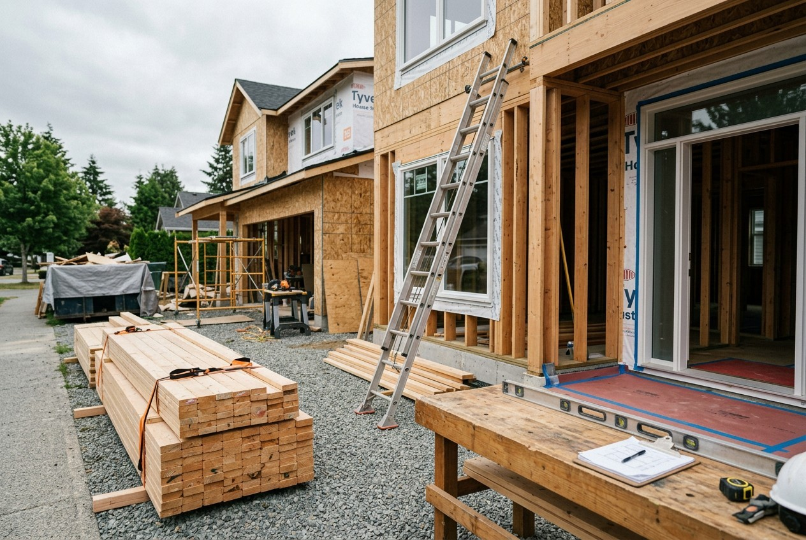
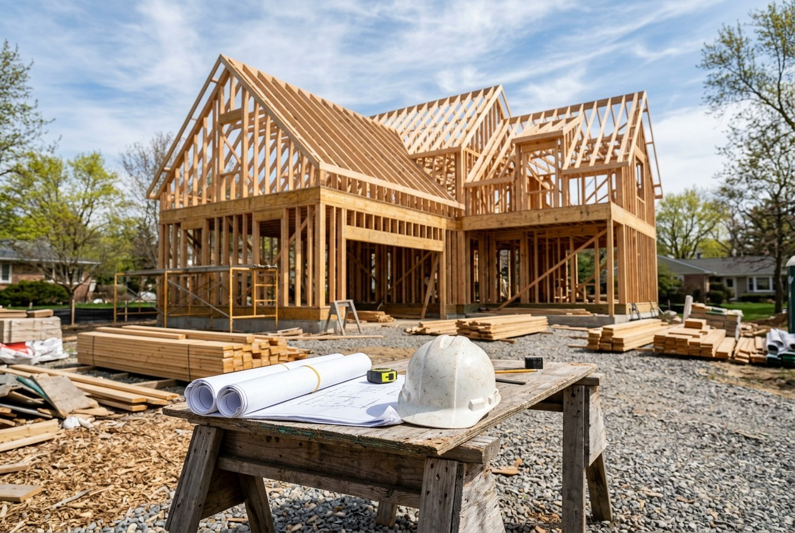

By the Editorial Team | Published: July 2026 | Last Updated: July 2026
Two Ways to Deliver a Residential Construction Project
Every construction project needs three things: a design, a price, and someone accountable for building it. How those three pieces are organized is called the project delivery method, and it shapes nearly everything that follows - the budget, the schedule, the number of contracts signed, and who answers for problems when they appear.
The two dominant delivery methods in residential construction are design-bid-build and design-build. They can produce the same house, but they distribute risk, responsibility, and communication in fundamentally different ways. Understanding the distinction is one of the most consequential decisions a homeowner makes before any ground is broken.
How Design-Bid-Build Works
Design-bid-build is the traditional sequence. The owner first hires an architect or designer to produce a complete set of construction documents. Those documents are then released to multiple general contractors, who submit competitive bids. The owner selects a contractor - often, though not always, the lowest bidder - and construction begins under a second, separate contract.
The defining feature is the two-contract structure. The designer works for the owner, and the builder works for the owner, but the designer and builder have no contractual relationship with each other. When a drawing conflicts with field conditions, the owner sits in the middle, mediating between two parties who may each point at the other.
Design-bid-build offers real advantages in the right circumstances. Competitive bidding can surface a lower construction price, the design is fully developed before pricing, and the owner retains an independent designer as a check on the builder's work. Public projects use this method almost exclusively for exactly these reasons.
How Design-Build Works
Design-build consolidates design and construction under a single contract with a single entity. The design-build firm employs or partners with the architects, estimators, and field crews, and it carries responsibility for both the drawings and the finished structure. The owner has one agreement, one point of accountability, and one team from concept through completion.
Because designers and builders sit inside the same organization, pricing feedback happens continuously during design rather than after it. If a proposed roofline or foundation detail threatens the budget, the estimating side flags it while the drawing is still editable. This is the mechanism behind design-build's most cited benefit: fewer expensive surprises after contracts are signed.
The trade-off is reduced independent oversight. The entity drawing the plans is the same entity profiting from construction, so owners must vet a design-build firm's track record, references, and transparency practices more carefully than they might vet a bidding contractor.
Side-by-Side Comparison
| Factor | Design-Bid-Build | Design-Build |
|---|---|---|
| Contracts | Two (designer + builder) | One (single firm) |
| Accountability | Split between parties | Single point of responsibility |
| Pricing timing | After design is complete | Continuous during design |
| Schedule | Sequential phases; longer overall | Overlapping phases; typically faster |
| Change orders | More frequent; drawings priced cold | Fewer; constructability reviewed early |
| Owner involvement | Mediates designer-builder conflicts | Communicates with one team |
| Independent design check | Yes - architect is separate | No - requires careful firm vetting |
Hybrids Between the Two Poles
The industry has developed intermediate models for owners who want features of both. Construction-manager-at-risk brings the builder into the design phase as a paid advisor - contributing pricing and constructability input - before converting to a guaranteed-price construction contract, preserving an independent architect while capturing early builder involvement. Architect-led design-build inverts the usual structure, placing the design firm at the head of the single contract. Progressive design-build phases the commitment: the owner and firm develop design and price collaboratively, with a defined off-ramp if the numbers don't converge.
These hybrids share a common insight: the expensive failures in construction happen in the gap between designing and pricing, and every successful delivery model closes that gap one way or another. For most residential projects the choice still reduces to the two primary models, because the hybrids carry administrative overhead that only larger budgets absorb comfortably.

Where Each Method Fits Best
Design-bid-build tends to suit owners who already have a trusted independent architect, who want maximum price competition on a fully documented design, or whose project requirements are unlikely to change once drawings are finished. It rewards patience and complete documentation.
Design-build tends to suit owners who value schedule certainty, integrated budgeting, and a single accountable relationship - which is why it has become the prevailing model for custom homes, where design decisions and cost decisions are deeply intertwined and evolve together over months of planning.
Industry adoption reflects this: the Design-Build Institute of America has documented steady growth in design-build's share of construction spending over the past two decades, driven largely by schedule savings and reduced litigation between owners, designers, and builders.
Questions the Delivery Method Answers
Before comparing firms or bids, an owner should ask: Who is responsible if the design can't be built for the estimated price? Who coordinates the engineers, and who pays when their documents conflict? How many parties will I be managing, and do I have the time and expertise to manage them? The delivery method - not the individual contractor - determines the answers.
Once the delivery model is chosen, the harder work of evaluating specific firms begins. For a detailed walkthrough of that evaluation process, see a dedicated guide to selecting a design-build custom home builder.
Is design-build more expensive than design-bid-build?
Not typically. While design-build removes competitive bidding on the full project, studies by the Construction Industry Institute have found design-build projects deliver lower cost growth and faster schedules on average, because pricing problems are caught during design rather than converted into change orders during construction.
Do I lose design quality with design-build?
No - design quality depends on the designers involved, not the contract structure. Established design-build firms employ or partner with licensed architects. The key is reviewing a firm's completed portfolio before committing.
What is a change order and why do delivery methods affect it?
A change order is a formal amendment to the construction contract that adjusts scope, price, or schedule. Design-bid-build produces more of them because builders price drawings they had no hand in developing; gaps surface in the field. Design-build reduces them through constructability review during design.
Can I bring my own architect to a design-build firm?
Many firms accommodate this through a hybrid arrangement, where the owner's architect handles concept design and the design-build firm develops construction documents. Responsibility boundaries should be defined in writing.
Which method is faster?
Design-build is usually faster because design and pre-construction activities overlap, and pricing does not wait for a finished drawing set. Schedule compression of ten to thirty percent versus sequential delivery is commonly reported.
Who owns the drawings in each model?
In design-bid-build, the architect typically retains copyright and licenses the owner to use the documents for that project. In design-build, ownership terms live in the single contract and vary by firm - owners should confirm they can keep and reuse the documents if the relationship ends before construction, since switching firms mid-stream without rights to the design means paying for it twice.
What happens if a design-build project goes wrong?
The single contract is an advantage in disputes: the firm cannot shift blame between designer and builder, because it is both. Remedies - warranty claims, mediation, arbitration - run against one party under one agreement. In design-bid-build, the same defect can trigger a three-way argument over whether the drawings or the workmanship failed, which is a major source of construction litigation.
